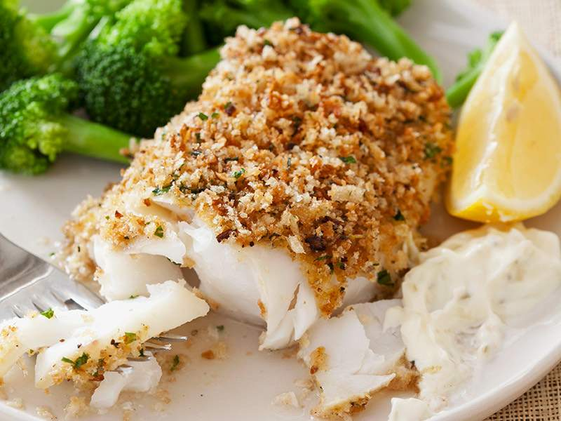

Crispy Baked Fish

Serving Size: 3 ounces, makes 4 servings
40 mg sodium per serving
Ingredients:
1 pound cod fillets
2 egg whites
3 tablespoons cornmeal
3 tablespoons flour
1 teaspoon garlic powder
3 teaspoon paprika
1 teaspoon dill weed
1 teaspoon black pepper
1 tablespoon Parmesan cheese
Preparation:
Rinse and drain fish.
Blend dry ingredients together.
Coat baking pan with olive oil.
Dip fish in beaten egg whites, and then coating mixture; shake off excess
coating. Lay fish into the pan.
Bake 15-20 minutes at 375° F or until fish flakes and is golden brown.